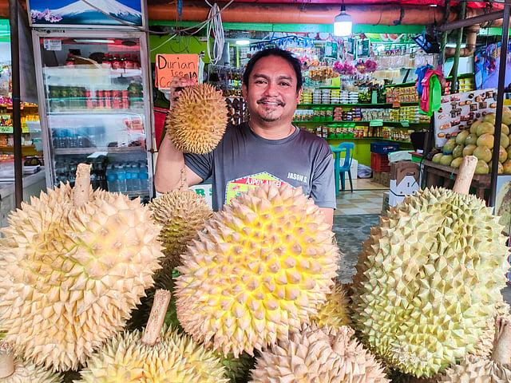
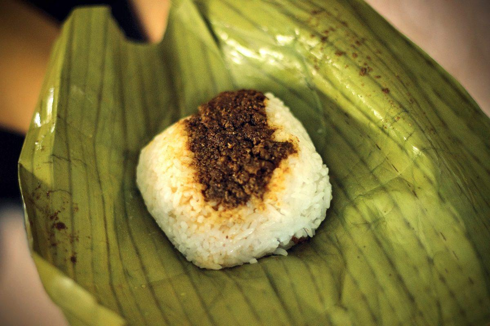
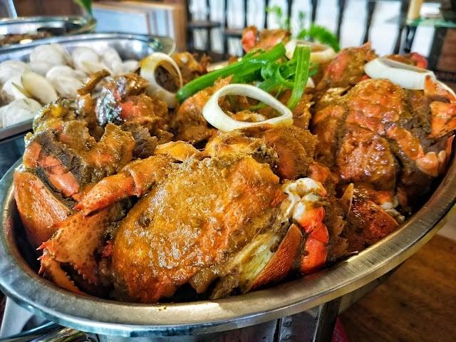

Famous For



Mindanao is famous for its agricultural products, traditional foods, indigenous crafts, and cultural diversity.
What Mindanao is famous for:
- Durian - A tropical fruit strongly associated with Davao, known for its distinctive smell and creamy texture.
- Tuna - General Santos City is widely known as the Tuna Capital of the Philippines.
- Pastil - A popular Maguindanaon rice meal wrapped in banana leaves, usually served with shredded chicken or beef.
- Curacha - A large deep-sea crab commonly associated with Zamboanga.
- Malong - A traditional tubular cloth used by several communities in Mindanao, particularly the Maranao and Maguindanaon.
- T'nalak - A traditional handwoven textile created by T'boli weavers of South Cotabato.